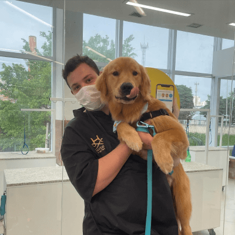

Os serviços prestados pela Petz funcionam como um ecossistema completo integrado às suas megalojas para cobrir todas as necessidades dos animais e a conveniência dos tutores em um único lugar. Na área de estética animal, a rede conta com modernos centros especializados que oferecem banho, tosa higiênica, escovação de pelos para remoção de nós, corte de unhas, limpeza de ouvidos e hidratações avançadas para manter a pelagem saudável. A saúde dos bichinhos é assistida pelo Centro Veterinário Seres, a bandeira veterinária da Petz que engloba desde consultas com clínicos gerais e especialistas (como dermatologistas e cardiologistas) até exames laboratoriais, aplicação de vacinas e cirurgias em hospitais 24 horas. Para completar a assistência, a marca comercializa um catálogo robusto de medicamentos em sua farmácia veterinária, disponibiliza a Assinatura Petz com entrega programada de rações e acessórios, e promove o engajamento social através do Adote Petz, o maior programa nacional de adoção responsável focado em conectar cães e gatos resgatados a novas famílias.
